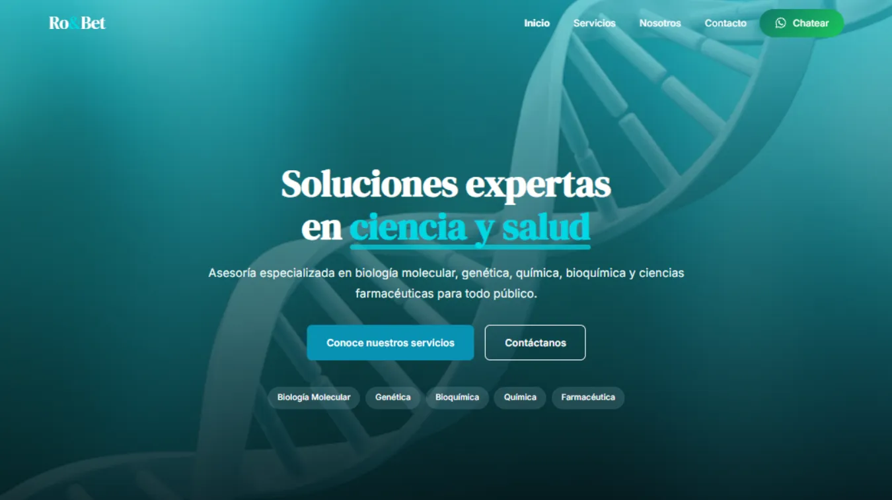

Creación de marca y presentación de servicios
Crear una marca moderna y plasmar los servicios de profesionales para que el proyecto funcione como una tarjeta de presentación web.
Landing Page para servicios profesionales de bioquímica.

Ro&Bet es un proyecto implementado por IST para el sector de bioquímica y farmacéutica. Una Landing Page para presentar los servicios de dos profesionales que buscan atraer clientes tanto en el ámbito académico como en el ámbito médico y cotidiano.
Crear una marca moderna y plasmar los servicios de profesionales para que el proyecto funcione como una tarjeta de presentación web.
HTML, CSS, JavaScript.
Cada proyecto comienza con una idea. Cuéntanos la tuya y encontremos juntos la mejor manera de llevarla a la realidad.